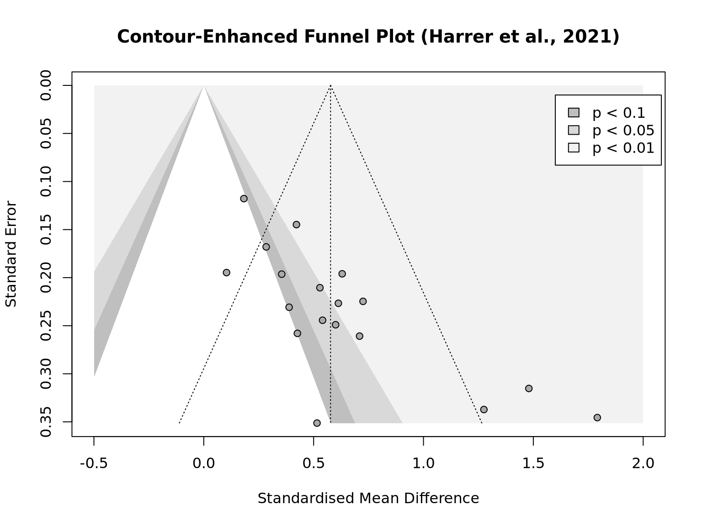
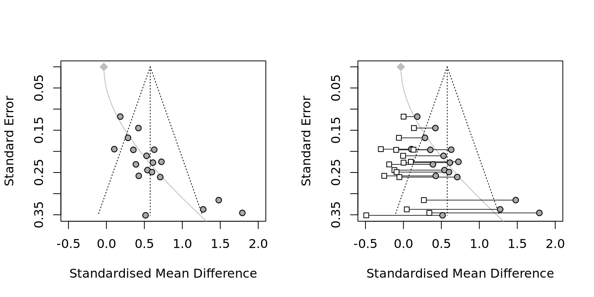

Chapter 12 Meta-Analysis
12.1 Introduction
Narrative reviews, systematic reviews, and meta-analyses are three type of evidence synthesis based on previous studies (Cuijpers 2016). Traditional narrative reviews give an overview of a research field based on both relevant studies and author’s opinions. The research questions and conclusions could be raised during or after reading the literature, but it is also possible that the author searches more evidences for proving the points after the conclusions had been clear in this review. How to choose and narrate the evidences is highly flexible. Systematic reviews require to define some clear rules for the review process. After determining the research question, the formal review should have fixed standards on study selection and include all valid evidences. Meta-Analysis can be looked as a special case of systematic reviews. Each chosen studies in mate-analysis contributes an observation for a predefined dataset. The results in meta-analysis must be quantitative and be generated by statistical methods. The methodology of systematic reviews tries to make the evidences being objective and reproducible. meta-Analysis further make the analysis process being transparent and reproducible.
- Requirement
Meta-analysis has more strict requirement on data collection than traditional reviews. The inclusion criteria must be defined carefully. Meta-analysis needs the studies’ results are identical then can synthesize some general results. The selected studies should have comparable research design including data sources, methods, and outcomes. Otherwise, the synthesizing the studies without common properties are meaningless, that is called the ‘apples and oranges problem.’ Yet, all published papers have unique contributions and have some differences. What is the allowed variant among studies depends on the research questions of meta-analysis. For example, if a research wants to find the relationship between travel behavior and influencing factors at individual level, the studies with aggregated travel response at city/region level should be excluded. And vice versa because individual behavior and social behavior are different questions. Therefore, in meta-analyisis of urban studies, there is particular concern about modifiable areal unit problem (MAUP).
To define a suitable research question, scholars give some suggestions and plan. In FINER framework, a research question should be feasible, interesting, novel, ethical, and relevant (Cummings et al., 2013). PICO framework (Mattos and Ruellas 2015) emphasize the eligible criteria on population, intervention, control group or comparison, and outcome. The American Psychological Association (APA) gives a guidance of inclusion and exclusion criteria, coding procedures, and statistical methods in the Meta-Analysis Reporting Standards (MARS). In a recent paper, Pigott and Polanin (2020) propose some methodological standards and recommended analysis plan for meta-analyses in social science.
Cuijpers (2016) suggests the information extracted from the selected studies should include studies’ characteristics, effect-size related values, and study quality information. The values of sample size, estimated effect size and standard deviation are essential contents. In addition to the data locations, collecting years, and methods, the papers’ published years, authors, etc. can also be the explainary variables in meta-analysis. For randomized controlled trials, the Cochrane Risk of Bias tools are used to evaluate study qualities (Higgins et al. 2019; Sterne et al. 2019). While the consistent and transparent study quality assessments are not common in social studies (Hohn, Slaney, and Tafreshi 2019).
- Limitations
The results of meta-analyses are the derivations of available studies. Thus, if most of the studies have cognitive errors such as the geocentric model, meta-analysis itself can not reject them and will actually reinforce them. People should not have too high expectation of meta-analysis. If most of the studies have poos quality or are systematically biased, meta-analysis will also be flawed inevitably, which is called “garbage in, garbage out” problem. That is why assessing study quality is critical in study selection.
Another type of limitation is that the available studies can not represent the ‘true’ population. Ideally, the observed studies are produced randomly and independently in a field but it never happens in reality. Publication bias, is also called “file drawer” problem means that researchers tend to submit the studies with positive, exciting, or significant results. Journal also tend to publish such kinds of articles. Thus, the available studies overrepresent a specific subgroup systematically and the results are biased. Some statistical techniques try to reduce the bias to a certain extent.
The “researcher agenda” Problem means that the researchers themselves are the important influencing factors in meta-analysis. During searching studies and analyzing data, they try to stay objective but may always have some personal preferences. Given the same data, researchers’ undisclosed opinions or unintentional choices could lead the analysis to vary conclusions (Silberzahn et al. 2018). Hence, post hoc (“after this”) analysis or data dredging should be avoid. A prior analysis makes the reuslts more valid and reliable.
- Meta-Analysis in travel-urban form studies
The meta-analysis in travel-urban form studies faces more exacting challenges. The same on many social studies, travel-urban form studies use observation design. They cannot satisfy the requirement of randomized controlled trials (RCT). The urban environment factors have many unknown and complex influences on travel behavior. They are not controllable as in laboratory. All the traveler lives in many kinds of urban environment. There is no control group for measuring the between-group mean difference. Most of travel survey only capture a moment of travel pattern. There is no repeat measurement for evaluating the random error. These shortfalls also make the relevant studies are highly heterogeneous. If the scope of studies is wide, the validity of meta-analysis becomes problematic. If the selection criteria is rigorous, there might be less than 10 studies on a topic.
Although meta-analysis in travel-urban form studies is not as reliable as the studies of RCT. Scholars still put effort into this approach. Because a generalized conclusion could have sumstential influence on policy making and social attitudes.
12.2 Effect Sizes
Effect sizes are the outcome variables of interest in meta-analysis. To make sure the effect sizes across studies are identical, an uniform measurement with the same meaning is essential. A few important standards also include computable, reliable, and interpretable (Lipsey and Wilson 2001; Higgins et al. 2019).
Effect Sizes describe both the direction and magnitude of the relationship. In single group designs, the measurements of effect sizes include means, proportions, and correlations. In control group designs, that include (Standardized) mean differences, risk and odds ratios.
- Correlations
While means and proportions describe a single variable, correlations disclose the connection between two variables. That is often the interest of research. The support of correlation is from -1 to +1. By a convention proposed by Cohen (1988), a correlation \(r\le 0.10\) is small and the the two variables might be independent. A correlation \(r\ge 0.50\) is large and implies the two variables are dependent. In social studies, many correlations are not over \(0.3\) but it implies a substantial change of daily life. Hence the ‘large’ or ‘small’ is context dependent.
Pearson product-moment correlation and its standard errors are calculated by
\[\begin{equation} r_{xy} = \frac{\sigma^{2}_{xy}}{\sigma_x \sigma_y}\quad SE_{r_{xy}} = \frac{1-r_{xy}^2}{\sqrt{n-2}} \end{equation}\]
To conduct some regression analysis, the correlation can be transferred into Fisher’s \(z\) which has a range of real number and is asymptotically normal distributed.
\[\begin{equation} z = 0.5\log_{e}\left(\frac{1+r}{1-r}\right)\quad SE_{z} = \frac{1}{\sqrt{n-3}} \end{equation}\]
For one continuous variable and one categorical variable, point-biserial correlation is calculated by
\[\begin{equation} {r_{pb}}= \frac{\sqrt{p_1(1-p_1)}(\bar{x_1}-\bar{x_2})}{s_x} \end{equation}\]
where \(\bar x_1\) is the mean of the continuous variable given the first level of the categorical variable \(y\), and \(\bar x_2\) is the mean given the secodn level of \(y\). \(p_1\) is the proportion of observations that fall into the first level of \(y\), and \(s_x\) is the standard deviation of \(x\). When the proportions are closed to 0 or 1, The point-biserial correlation could has a restricted range (Bonett 2020).
- Unbiased estimate of Effect Size
In control group designs, several methods can reduce the bias of effects size. When the sample size is small, Hedges’ \(g\) can correct the standardized mean differences (SMD) by \(g = \text{SMD} \times (1-\frac{3}{4n-9})\). Another method is repeat measurement of the same case within a short time and under a stable environment.
A small correlation between the two variables may due to the highly restricted range. For example, U.S. cities may represent the cities in low-density, developed countries and can not represent all cities in the world. That could be the reason of detecting a weak relationship between VMT and urban density in the U.S. In some cases, a small range is suitable such as excluding the observations with no-trip or extremely long trip distance. Hence, the analysis of range restriction is crucial. Research should investigate the variable ranges from literature or more general information. Then define a proper restriction for the current research design.
If the restriction is meaningless and is not intended, a correction term \(U\) is the ratio of standard deviation between the unrestricted population and restricted variable. That is \(U= \frac{s_{unres}}{s_{res}}\) where the value of \(s_{unres}\) is based on relevant representative studies. Then
\[\begin{equation} r^*_{xy} = \frac{U\cdot r_{xy}}{\sqrt{(U^2-1)r_{xy}^2+1}} \end{equation}\]
- Pooling Effect Sizes
As dicussed in previous chapter, the fixed-effect models assume the true effect size is a fixed value in all studies. The random-effect models assume the effect sizes have a variance.
\[\begin{equation} \begin{split} \hat\theta_k =& \mu + \varepsilon_k \text{fixed effect}\\ \hat\theta_k =& \mu + \zeta_k + \varepsilon_k \text{random effect} \end{split} \tag{12.1} \end{equation}\]
where \(\hat\theta_k\) is the estimate of effect size of study \(k\), \(\mu\) is the true mean of effect for all studies. \(\varepsilon_k\) is the random error and \(\varepsilon\sim N(0,\sigma^2)\). \(\zeta_k\) is the random effect in study \(k\) and \(\zeta\sim N(0,\tau^2)\). \(\tau^2\) is the heterogeneity variance.
Then a weighted average effect size can get from
\[\begin{equation} \hat\theta = \frac{\sum^{K}_{k=1} \hat\theta_kw_k}{\sum^{K}_{k=1} w_k} \end{equation}\]
where
\[\begin{equation} \begin{split} w_k = 1/s^2_k &\text{fixed effect}\\ w_k = 1/(s^2_k+\tau^2) &\text{random effect} \end{split} \tag{12.2} \end{equation}\]
In random-effects models, the variance of the distribution of true effect sizes \(\tau^2\) should be added into the denominator. Reid Ewing and Cervero (2010) ’s meta-analysis use sample size to calculate weighed average elasticities because lacking consistent standard error estimates from collected research.
12.3 cross-study Heterogeneity
cross-study heterogeneity describe the extent of variant of effect sizes with in a meta-analysis. In social studies, cross-study heterogeneity is common and random-effects model usually is anticipated. A high heterogeneity shows that the studies may contain two or more groups with different true effect. A very high heterogeneity imply the overall effect is meaningless and the two or more groups should not be analyzed together. Hence the degree of cross-study heterogeneity should always be reported in meta-analysis.
Rücker et al. (2008) suggest to distinguish two types of heterogeneity. Baseline or design-related heterogeneity means the population or research design has substantial difference. That is the ‘apples and oranges’ problem. While statistical heterogeneity reflects the magnitude of precision of effect size and is acceptable in meta-analysis.
Considering the random-effects model, \(\tau^2\) is the variance of the true effect sizes. The 95% confidence interval of the expected effect sizes is
\[\begin{equation} \hat\mu \pm t_{K-1, 0.975}\sqrt{SE_{\hat\mu}^2+\hat\tau^2} \end{equation}\]
- Cochran’s Q
Cochran’s \(Q\) (Cochran 1954) can be used to check whether the variation in the studies is reasonable. If the random error is the only source of effect size differences, the value of \(Q\) should not get an excess variation than expected.
\[\begin{equation} \begin{split} Q = \sum^K_{k=1}w_k(\hat\theta_k-\hat\theta)^2\quad\text{where}&\quad w_k=1/s^2_k\quad\text{fixed effect}\\ Q = \sum_{k=1}^{K} w_k (\hat\theta_k-\hat\mu)^2\quad\text{where}&\quad w_k=1/(s^2_k+\tau^2)\quad\text{random effect} \end{split} \end{equation}\]
where \(\hat\theta_k\) is the predicted effect on study \(k\), \(\hat\theta\) is the estimate of overall effect in fixed-effect model, \(\hat\mu\) is the estimate mean of overall effect, \(\tau^2\) is the variance of overall effect, \(w_k\) is the weight calculated by the study’s precision. Cochran assume \(Q\) approximately follow a \(\chi^2\) distribution with \(K-1\) degrees of freedom. \(K\) is the total number of studies in meta-analysis. The null hypothesis is no heterogeneity. Either increasing the number of studies \(K\) or the sample size of each study can increase \(Q\) value. Therefore, only \(Q\) can not be a sufficient evidence of heterogeneity.
- \(I^2\) Statistic and \(H^2\) Statistics
Both \(I^2\) and \(H^2\) are based on Cochran’s \(Q\) (Higgins and Thompson 2002). If \(Q\) follows a \(\chi^2\) distribution with \(K-1\) degrees of freedom, then \(E[Q]=K-1\) when there is no heterogeneity. And \(Q-(K-1)\) is the exceeded part of variation. \(I^2\) represents the percentage of the exceeded part in the effect sizes. That is
\[\begin{equation} I^2 = \frac{Q-(K-1)}{Q} \end{equation}\]
A conventional standard is that \(I^2\le\) 25% means low heterogeneity, \(I^2\ge\) 75% means substantial heterogeneity. When \(Q\) value is smaller than \(K-1\), then let \(I^2=0\). Compared to \(Q\), \(I^2\) is not sensitive to the changes of number of studies.
\(H^2\) is the direct ratio of observed variation over the expected variance. When \(H^2\le1\), there is no cross-study heterogeneity. \(H^2>1\) indicates the presence of cross-study heterogeneity. \(H^2\) is also increases along with the number of studies.
\[\begin{equation} H^2 = \frac{Q}{K-1} \end{equation}\]
- outlier and leverage points.
When one or more studies have a large absolute value of residual, which is three times or more of standard deviation, these points are called outlier. The observations with unusual predictors values could strongly influence the model and corresponding estimates. These cases are called leverage points.
Both outlier and leverage point could change the modeling results. But these are not sufficient evidences for removing these points. Especially, deleting some cases is not acceptable if it tries to make the results more significant or have larger effect size. The criteria should still be based on the research question. Researcher needs to reexamine all available information to decide if these cases are not valid for this study.
12.4 Meta-Regression
Similar with other regression analysis, Meta-regression chooses the effects sizes as the response, the characteristics of studies as predictors, for example the year, location, or language of study conducted. Some meta-regression analysis select the attributes of research design as predictors. For example, Stevens (2017b) controls the effect of “controlling for residential self-selection.” In addition, Aston et al. (2021) add published years and “controlling for regional accessibility” as explanatory variables in meta-regression.
The model used in meta-regression usually assumes the added predictors have a fixed effect. The random terms include the random errors \(\epsilon_k\) and cross-study heterogeneity \(\zeta_k\). Hence it is a mixed-effects model.
\[\begin{equation} \hat\theta_k = \theta + \sum_{j=1}^{(p-1)}\beta_j x_{jk} + \epsilon_k+\zeta_k \end{equation}\]
Weighted least squares (WLS) is used in meta-analysis to address the different standard error of effect size.
Usually, the sample size of meta-regression is small and there is no extra information for cross validation. There is no clear theoretical mechanism to explain the ralationship between effects sizes and paper’s properties. Hence, researcher should be temperance in adding more predictors.
- Subgroup Analyses
Subgroup analysis are a special case of meta-regression. When the added predictors are categorical variables, it means all observations inside a group have a shared effect. If the group levels exhaust all possible levels of population, the group effects are looked as fixed. If the group levels are just drawn from a large amount of levels, then the group effects are random and the observations in all groups share a common variance \(\tau^2\)
12.5 Publication Bias
12.5.1 Checking Publication Bias
It is known that the studies with significant findings have greater opportunity for publishing. This phenomenon will distort the findings, often overestimate the effect sizes, or overlook the negative effects. That is called publication bias.
In meta-analysis the available studies, which usually refer to the published papers, are only a small part of all studies describing one research field. The rest part, the unpublished studies for many different reasons, can be looked as missing data in statistics. There are three types of missing data: Missing completely at random (MCAR) means the observed and unobserved events occur randomly and independent. For MCAR data, the estimates are unbiased. Missing at random (MAR) means the missingness is not random, but some variables can fully account the reason of missing. By addressing the influencing factors, MAR data still can give unbiased estimates. Missing not at random (MNAR) means the variable related to the reason of missing is not available.
There is no doubt that the published papers are not random selected and can not represent the population of studies. Actually, there is not way to verify and solve the MNAR problems in meta-analysis. It has to assume the type of missing is MAR and the missing events associates with some available information.
There are several common reasons of missing in meta-analysis (Page et al. 2020). The first reason is questionable research practices (QRPs). That means that researchers have bias when analyzing and reporting their findings (Simonsohn, Simmons, and Nelson 2020). For example, one type of QRP, p-hacking is repeating the trial until a significance level of \(p<0.05\) appeared. Changing the hypothesis after knowing the results is another type of QRP (Kerr 1998). By dropping off the “unfit” hypotheses, the conclusion will be biased and is not reproducible.
In the published papers, the studies with insignificant or negative results are often low cited and are easily omitted by studies selection. That is called citation bias. Time-lag bias refers to the studies with significant results are available earlier than others. Language bias means that non-English studies are systematically neglected. Sometimes, a study with exciting results could be used in several published papers. That is called multiple publication bias and it will reinforce the overestimated effects.
Published bias often refer to all of these biases happened before or after publication. Their common feature is that the studies’ results are the reason of missing.
For examining the risk of publication bias and mitigating the publication bias, two categories of methods are standard error based and p-value based.
12.5.2 Standard Error-based Methods
The key assumption of these methods is that the effect’s standard errors are related to studies’ publication bias. Standard error is also interpreted as study’s precision.
- Small-Study Effect
Small-study effect methods assume that a small study has greater standard error, overestimated effects, and larger publication bias (Borenstein et al. 2011, chap. 30). It is true that the studies with small sample size will give the effects with larger uncertainty. The published small studies often have high effect sizes. While, large studies often involve more resources, longer time, and some “big names” in a field. Therefore, this method believe that publication bias has stronger influence on the small studies and the estimates in large studies are more close to the true values.
The funnel plot provide a graphic way to recogonize the publication bias. In a scatter plot of effects sizes (x-axis) versus standard errors (y-axis), each point represents a study. Ideally, the pattern should like a symmetric upside-down funnel or pyramid. The top part with small standard errors is tight and the bottom part spread over. All of the points should evenly distributed around the vertical line of mean effects. But for the publication bias exists, the observed studies would concentrate at one side. That also implies the mean effect could be a offset of the true effect.
Publication bias is not the only reason of asymmetric pattern. cross-study heterogeneity also leads to asymmetric plot for the different true effects. The contour-enhanced funnel plots (Peters et al. 2008) adds more useful information and help to distinguish publication bias from other forms of asymmetry. The regions of significance levels (e.g. \(p< 0.1\), \(p< 0.05\), and \(p< 0.01\)) in the plot shows how close the point cluster to the significance edge. If the available studies lie around the edge, the true effect is likely to be zero.

- Egger’s regression test
Egger’s regression test (Egger et al. 1997) can help to quantify the extent of asymmetry in funnel plot. The simple linear model is
\[\begin{equation} \frac{\hat\theta_k}{SE_{\hat\theta_k}} = \beta_0 + \beta_1 \frac{1}{SE_{\hat\theta_k}} \end{equation}\]
In Egger’s test, the intercept \(\hat\beta_0\) evaluate the funnel asymmetry. If the hypothesis \(\hat\beta_0=0\) is rejected, then Egger’s test shows the plot is asymmetric.
- Peters’ Regression Test
For binary response, Peters’ regression test (Peters et al. 2006) use a weighted simple linear model
\[\begin{equation} \log\psi_k = \beta_0 + \beta_1\frac{1}{n_k} \end{equation}\]
where \(\log\psi_k\) represent the log transformation on odds ratios, risk ratios, or proportions. the predictor is the inverse of the sample size \(n_k\) in \(k\)th study. When fitting the model, each \(1/n_k\) is assigned a weight \(w_k\), depending on its event counts in treatment group \(a_k\) and control group \(c_k\), non-event counts in treatment group \(c_k\) and control group \(d_k\).
\[\begin{equation} w_k = \frac{1}{\left(\dfrac{1}{a_k+c_k}+\dfrac{1}{b_k+d_k}\right)} \end{equation}\]
Peters’ test uses \(\beta_1\) instead of the intercept to test asymmetry. When the test rejects the hypothesis of \(\beta_1 = 0\), the asymmetry may exist. For small sample size \(K<10\), Eggers’ or Peters’ test may fail to identify the asymmetry. (Sterne et al. 2011).
- Trim and Fill Method
Duval and Tweedie trim and fill method (Duval and Tweedie 2000) is a technique of eliminating publication bias. It is an data imputation method by repeating two steps. The first step of trimming tries to identify the outliers and reevaluate the estimates. In the second step of filling, the trimmed points are adjusted by the expected bias and mirror to the opposite side. Then the mean effect is recalculated based on all points.
This method is based on a strong assumption that the publication bias is the only reason of asymmetry. It will fail when the cross-study heterogeneity is large (Simonsohn, Nelson, and Simmons 2014a).
- PET-PEESE
PET-PEESE method (Stanley and Doucouliagos 2014) includes two parts of the precision-effect test (PET) and the precision-effect estimate with standard error (PEESE) Both of them are simple linear model with response of effect size and predictor of standard error.And the weights are still the inverse of the variance \(w_k= 1/s_k^2\).
\[\begin{equation} \begin{split} \theta_k = \beta_0 + \beta_1\mathrm{SE}_{\theta_k} &\quad \text{PET}\\ \theta_k = \beta_0 + \beta_1\mathrm{SE}_{\theta_k}^2 &\quad \text{PEESE} \end{split} \tag{12.3} \end{equation}\]
In the PET part, intercept \(\hat\beta_0\) is used to examine whether the effect size is zero. If the hypothesis of \(\beta_0=0\) is rejected in PET model, then use the expected \(\hat\beta_0\) in PEESE model as the corrected effect size. the PET-PEESE method does not perform well for the meta-analysis with small sample size or high cross-study heterogeneity (Carter et al. 2019)
- Rücker’s Limit Meta-Analysis Method
limit meta-analysis by Rücker et al. (2011) tries to shrink the publication bias by adding an adjusting term.
\[\begin{equation} \hat\theta^*_k = \hat\mu + \sqrt{\dfrac{\tau^2}{SE^2_k + \tau^2}}(\hat\theta_k - \hat\mu) \end{equation}\]
where \(\hat\theta^*_k\) is adjusted expected effect size of study \(k\). \(\hat\theta_k\) is the original expected effect size of study \(k\). \(\hat\mu\) is the expected value of mean effects. \(SE^2_k\) is still the observed variance of \(k\) and \(tau^2\) is the cross-study variance.

The gray curve shows that the magnitude of expected bias is a monotone increasing function of standard error. Every observations’ effects are adjusted by this curve.
12.5.3 P value-based Methods
- P-Curve
Since the studies with significant results (p-value < 0.05) tend to be published, either due to the authors or reviewers, the distribution of p-values in the published papers should be exceptional. P-Curve methods is straightforward by examining whether the p-values in selected studies follows a “reasonable” distribution.
In a simulation test, Harrer et al. (2021) show that the simulated p-values by sampling from a standard normal distribution follows a exponential distribution. When the true effect size is large, the distribution is highly right skewed. Along with the effect size decreasing , the distribution has a longer and longer tail until it becomes an uniform distribution. while another influencing factor is the sample size \(n\). Larger \(n\) will lead to shorter tail.
Based on this assumption, the distribution of p-value in p-hacking studies will be left skewed. P-curve only shows that the distribution of p-value associates with effect size and sample size. But the true distribution is still unknown.
Figure 12.1: P-curves for varying study sample size and true effect.
- Test for Right-Skewness
It is hard to know the true distribution of p-values but it is easy to test whether the effect size equals zero or not. Here converts the p-value to a proportion of pp-value as \(pp=p/\alpha\) where \(\alpha\) is the significance level. Using Fisher’s method,the null hypothesis is no right-skewness. If the null hayothesis is rejected, that means the effect exists.
\[\begin{equation} \chi^2_{2K} = -2 \sum^K_{k=1} \log(pp_k) \end{equation}\]
- Test for 33% Power (flatness of the p-curve)
Test for 33% power starts from another direction. Based on the properties of the non-central distribution of \(F\), \(t\), or \(\chi^2\), the null hypothesis is that a small effect exists, or the p-curve is slightly right skewed.
The 33% power is a rough threshold. Statistical power \(1-\beta\) means a probability of correctly rejecting the null hypothesis. It is equivalent with a 66% probability of Type II error, also called “false negative.” For example, in a paired t-test for normal distributed data, if the alternative hypothesis is true and the true difference \(\theta=\theta_0\). Then the power is
\[\begin{equation} \begin{split} &Pr(\frac{\hat\theta-0}{SE}>\Phi^{-1}(0.95)|\theta=\theta_0)\\ =&Pr(\frac{\hat\theta-\theta}{SE}>1.64-\frac{\theta}{SE}|\theta=\theta_0)\\ =&1-Pr(\frac{\hat\theta-\theta}{SE}<1.64-\frac{\theta}{SE}|\theta=\theta_0)>0.33 \end{split} \tag{12.4} \end{equation}\]
When the sample size is large, \(\frac{\hat\theta-\theta}{SE}\) asymptotically follow a standard normal distribution. Then
\[\begin{equation} \frac{\theta}{SE}>1.64-\Phi^{-1}(0.66)\approx 1.2324 \end{equation}\]
When the right-skewness test cannot reject \(\theta=0\), then the flatness test may reject that the effect size is large. If both of the two tests are not significant, then the evidence is insufficient for any conclusion. Note that the flatness test depends on how to define a small value of \(\theta\). Another alternative method is the Kolmogorov-Smirnov (KS) test by comparing a sample with a reference probability distribution.
- Selection Models
Selection Model supposes a probability density function \(f(\theta)\) can reflect the true distribution of effect sizes without publication bias. The background assumption still is the observed effect sizes \(\theta_k \sim N(\mu,\sigma^2+\tau^2)\), sampling error \(\sigma^2\), and cross-study heterogeneity variance \(\tau^2\). By assuming a weight function \(w(p_k)\) of p-value \(p_k\) can represent the mechanism of publication bias, then the adjusted function \(f^*(\theta)\) should be consistent with the observed data.
\[\begin{equation} f^*(\theta_k) = \frac{w(p_k)f(\theta_k)}{\int w(p_k) f(\theta_k) d\theta_k} \end{equation}\]
A straightforward choice of \(w(p_k)\) is a step function (Hedges and Vevea 1996). Since \(\alpha_{1,2,3}=0.05, 0.1, 0.5\) is the common critical values, the step function uses them as cut points and divide the range of p-value \(p\in(0,1)\) into four segments. Using maximum likelihood, the probability for each segment can be estimated such as \(w_{1,2,3,4}=1,0.8,0.6,0.35\), and the best fitted \(f^*(\theta)\) can recover the true function \(f(\theta)\) and unbiased estimates of \(\hat\mu\) and \(\hat\tau^2\)
Figure 12.2: Selection model based on a step function.
Three-parameter model assumes only one cut-point (McShane, Böckenholt, and Hansen 2016). That is \(\alpha=0.025\), which means p-value \(=0.05\) in a two-sides test. Then the weight function only has two segments. The three parameters inlude the true effect \(\mu\), the cross-study heterogeneity variance \(\tau^2\), and the probability of the second segment \(w_2\).
Fixed weights selection model completely assigns all the cut points and their weight (Vevea and Woods 2005). This method allows to fit a very flexible selection model. On the contrary, one can also assume a global monotonic decreasing distribution such as half-normal, logistic, negative-exponential, etc.
All of these methods are based on the assumed distribution under publication bias being correct. Without sufficient cases and test, identifying the true distribution in one specific field is difficult. Especially, when cross-study heterogeneity is high, such as \(I^2\approx\) 75%, these approaches are not reliable.(Aert, Wicherts, and Assen 2016). Therefore, when the meta-analyses of travel-urban form studies show the high heterogeneity, it is hard to verify and eliminate the possible publication bias.